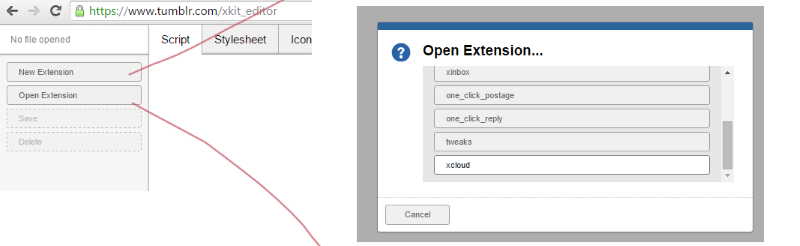
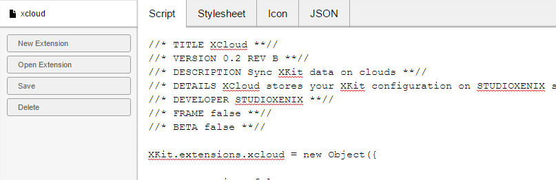
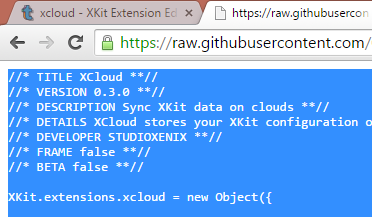
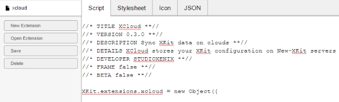
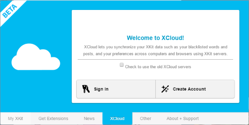

XCloud Migration Guide
Contents
- Introduction
- Setting up XCloud on old XKit
- Using new XCloud
- Verifying XCloud
- Installing New-XKit
Introduction
This guide will walk you through upgrading from the old XKit to New-XKit if you're unable to access the old XCloud servers.
This is for users who:
- Are on old XKit
- Cannot login to the old XKit servers.
- XCloud trouble shooting guide did not work.
This guide is a shade long and can take some time. So grab a cup of tea and let's get started.
Setting up XCloud on old XKit
Fortunately we can setup the access to the new XCloud servers on old XKit.
Setup old XCloud
We first need to have the old XCloud in our extension list. If you already have it, just skip to the next step.
Just download the extension like you would any other.
After downloading XCloud should be installed in the XCloud tab.

Open the XKit editor
XKit has a built in extension editor. We will be using this to modify the XCloud extension to point to the new XCloud servers.
You can find the XKit editor in the "Other" tab near the bottom of the list on the left.
In the editor screen, open the XCloud extension. (Open Extension -> XCloud)

You should now see the old XCloud extension's source code.
Copy in the new XCloud
Replace the entire script with the new XCloud code here.
Just select all of the script -> delete -> select all of the new XCloud code -> paste in the editor.


Then click save in the editor and go back to Tumblr. XCloud should work.
Using XCloud
To use XCloud you will need to register an account. After registration, hit the sync button to upload all of your extension data.
Verifying XCloud
We have an XCloud portal setup so you can verify that it worked.
You can visit the portal at https://portal.new-xkit.com
After logging in with the same username and password you registered with, click on status to see the extensions that were uploaded.
It will also verify that your extensions were not corrupted in the upload. Form here you can download your extension data for a backup.
If verification was not successful on an extension, try syncing again. If it happens again, drop an ask on our support blog.
Installing New-XKit
Make sure you uninstall the old XKit before installing New-XKit
You can find links to the up to date Firefox and Chrome builds of New-XKit on our tumblr blog.